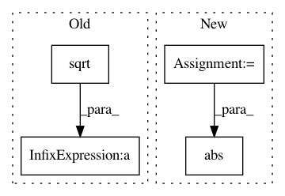

e70bdb2d089ae283781c45b8d97963823a984baa,ch10/00_pong_pg.py,,,#,51
Before Change
grad_count = 0
for p in net.parameters():
grad_max = max(grad_max, p.grad.abs().max().data.cpu().numpy()[0])
grad_means += (p.grad ** 2).mean().sqrt().data.cpu().numpy()[0]
grad_vars += torch.var(p.grad).data.cpu().numpy()[0]
grad_count += 1
writer.add_scalar("baseline", baseline, step_idx)
writer.add_scalar("entropy", entropy_v.data.cpu().numpy()[0], step_idx)
writer.add_scalar("batch_scales", np.mean(batch_scales), step_idx)
writer.add_scalar("batch_scales_std", scale_std, step_idx)
writer.add_scalar("loss_entropy", entropy_loss_v.data.cpu().numpy()[0], step_idx)
writer.add_scalar("loss_policy", loss_policy_v.data.cpu().numpy()[0], step_idx)
writer.add_scalar("loss_total", loss_v.data.cpu().numpy()[0], step_idx)
writer.add_scalar("grad_l2", grad_means / grad_count, step_idx)
writer.add_scalar("grad_max", grad_max, step_idx)
writer.add_scalar("grad_var", grad_vars / grad_count, step_idx)
After Change
kl_div_v = -((new_prob_v / prob_v).log() * prob_v).sum(dim=1).mean()
writer.add_scalar("kl", kl_div_v.data.cpu().numpy()[0], step_idx)
grads = np.concatenate([p.grad.data.cpu().numpy().flatten()
for p in net.parameters()
if p.grad is not None])
writer.add_scalar("baseline", baseline, step_idx)
writer.add_scalar("entropy", entropy_v.data.cpu().numpy()[0], step_idx)
writer.add_scalar("batch_scales", np.mean(batch_scales), step_idx)
writer.add_scalar("batch_scales_std", scale_std, step_idx)
writer.add_scalar("loss_entropy", entropy_loss_v.data.cpu().numpy()[0], step_idx)
writer.add_scalar("loss_policy", loss_policy_v.data.cpu().numpy()[0], step_idx)
writer.add_scalar("loss_total", loss_v.data.cpu().numpy()[0], step_idx)
writer.add_scalar("grad_l2", np.sqrt(np.mean(np.square(grads))), step_idx)
writer.add_scalar("grad_max", np.max(np.abs(grads)), step_idx)
writer.add_scalar("grad_var", np.var(grads), step_idx)
batch_states.clear()
In pattern: SUPERPATTERN
Frequency: 3
Non-data size: 4
Instances
Project Name: PacktPublishing/Deep-Reinforcement-Learning-Hands-On
Commit Name: e70bdb2d089ae283781c45b8d97963823a984baa
Time: 2017-12-15
Author: max.lapan@gmail.com
File Name: ch10/00_pong_pg.py
Class Name:
Method Name:
Project Name: nipy/dipy
Commit Name: 39dc6942a69a280cb6935c48c0d524d2dd2d9385
Time: 2010-11-10
Author: iannimmosmith@gmail.com
File Name: dipy/core/generalized_q_sampling.py
Class Name:
Method Name: triple_odf_maxima
Project Name: librosa/librosa
Commit Name: b835d5b330dad5cb9cb38597f2d1969946d8b48b
Time: 2018-02-10
Author: brian.mcfee@nyu.edu
File Name: librosa/core/constantq.py
Class Name:
Method Name: icqt